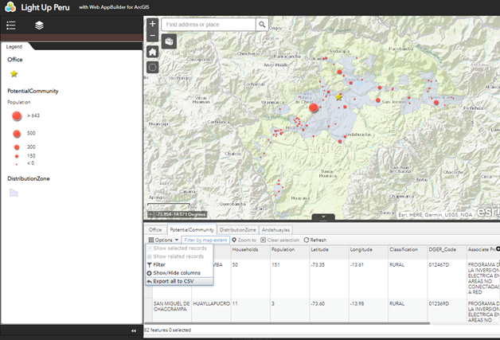
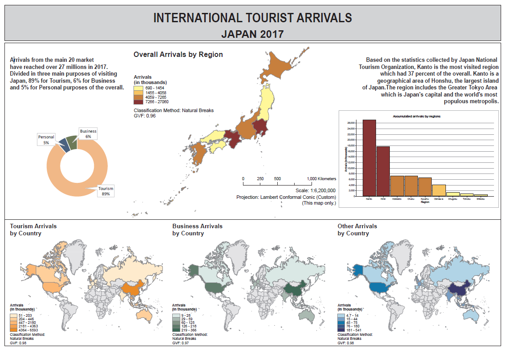

About
Hello, I am Kate, a fan of location strategy, have been working as a GIS Analyst for over 2 years. My main interests in GIS are: Building Web Mapping applications which provide user interaction surface and realtime data vitualization. Implementing GIS applications to improve the workflow and reduce manaul processes for all the stakeholders. Exploring nowaday technologies and upgrading current GIS solutions.
My skills are: ArcGIS, PostGIS, Geocortex Html5Viewer, Mapbox, ArcGIS Online, ArcGIS Web Appbuilder Python, VB, C Sharp, JavaScript arcpy, Numpy, geoPandas SQL, MySQL, PostgreSQL Windows, Git, Code Pen, Anaconda, Node.js Tomcat, IIS, TLS/SSL Certificates
Some samples of my work:
2019 Light Up Peru Project
The purpose of this Capstone project is to help the non-profit organization, LUTW (Light Up The World), by determining ideal locations to install solar panel systems by implementing geographic information systems. The web mapping service will allow users to obtain the information while they are at site which they can either view the map or extract the data through the interface.
Methodologies: ArcPy, 3D spatial extension, ArcGIS Online, ArcGIS Web AppBuilder
2019 International Tourist Arrivals ‐ Japan
The entry tourism of visiting has reached to 27 million tourists in Japan in 2017. The growth of the tourism has successfully increased the Japanese income rapidly. According to the Japan Tourism Statistics, it has been found that the top international markets were mostly from East Asia and South Asia, due to the closer geographical locations. The thematic maps were made for these 3 main visit purposes, including tourism, business and other arrivals.
Methodologies: Thematic maps and Sturgis rule.